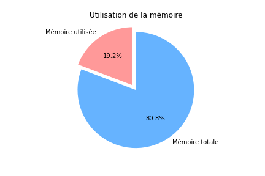
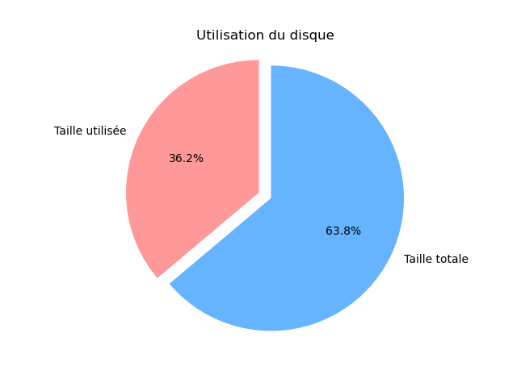

CPU Type: Intel(R) Core(TM) i5-8400 CPU @ 2.80GHz, Fréquence actuelle: 3799.575 MHz, Taille du cache: 9216 KB
238.47 Go
38.26 Go
Version Linux: 6.1.0-11-amd64, Architecture: debian-kernel@lists.debian.org
7.56 Go
6798.55 Mo
942.89 Mo
eno1
-----------------------------------------------------------------------------------------------------------------------------------------------------------------------------------
Nombre de processus actifs sur la machine : 272
Temps total depuis que le serveur est lancé : up 2 hours, 20 minutes
Ports UDP/TCP ouverts :
-----------------------------------------------------------------------------------------------------------------------------------------------------------------------------------
Graphique camembert représentant l'utilisation de la mémoire actuelle :

Graphique camembert représentant l'utilisation du disque
